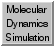

Molecular Dynamics Simulation 
Molecular Dynamics Simulation is an interface to
minimization and molecular dynamics routines provided by
MMTK,
which is included with Chimera.
Amber
parameters are used for standard residues, and Amber's
Antechamber module (also included with Chimera)
is used to assign parameters to nonstandard residues.
Thanks to Victor Muñoz Robles and Jean-Didier Maréchal
(The Computational Biotechnological Chemistry Team,
Universitat Autònoma de Barcelona; funding from
Ministerio de Ciencia e Innovación, Generalitat de Catalunya)
for implementing this tool. See also:
Minimize Structure,
MD Movie,
the Sophia
plugin to Chimera
|
This tool was developed for teaching about molecular dynamics
using simulations on small molecules.
Compared to dedicated packages for molecular simulation
(Amber,
Gromacs, others),
the calculations are relatively slow and parameter options few.
Although it may be useful for limited sampling and relaxation of macromolecular
structures and complexes, this tool is not suitable for long simulations
on macromolecules, such as needed to predict changes in stability or
binding energy. For such applications, other packages should be used instead.
|
There are several ways to start
Molecular Dynamics Simulation, a tool in the MD/Ensemble
Analysis category.
Select model:
The model of interest should be chosen by clicking to highlight its name
in the list of models.
All of the atoms for simulation should be included in this model;
any other models will be ignored.
The dialog has four tabbed sections, in order of typical use:
- Prep Structure
- structure cleanup and association with force field parameters
- Solvation
- adding solvent and/or counterions to the system,
setting box size for periodic boundary conditions
- Constraints Etc.
- constraints and force field options
- Run Parameters
- parameters for minimization, molecular dynamics (MD) equilibration, and
MD production; initiating the calculations
Only one section is shown at a time, and clicking the tab for another
brings it to the front.
Structure preparation is the same as for
Minimize Structure
and consists mainly of running
Dock Prep
to perform several tasks to prepare the system for energy calculations.
These tasks may include calling
AddH to add hydrogens and
Add Charge to associate
atoms with partial charges and other
force field parameters.
One of the following should be chosen before
Dock Prep
is started:
- Memorize options chosen in subsequent dialogs (default)
- save the settings of
Dock Prep
and further tools it calls to prepare the structure;
the settings are saved in the
preferences file
for future uses of Molecular Dynamics Simulation
or Minimize Structure
- Use previously memorized options, if any
- use settings saved with the preceding option in a prior use of
Molecular Dynamics Simulation
or Minimize Structure
- Neither memorize nor use memorized options
- do not use previously saved settings; show the dialogs so that
settings can be chosen explicitly for the current calculation,
but do not save the settings
See the Minimize Structure
documentation for details on
force field parameters
and associated
limitations.
Buttons are provided to add solvent and counterions, if desired, by running the
Solvate and
Add Ions tools, respectively.
Periodic Boundary Conditions should only be used when a solvent box
has been added. In that case, the “rgn size” reported by
Solvate
in the Reply Log
can be entered as the dimensions of the (orthorhombic) periodic box.
Alternatively, checking the Automatic box size option will use the
bounding box of the chosen model along X, Y, and Z
plus 2 Å padding on all sides.
The automatic box size will be reported as the “universe size”
in the Reply Log when the
calculations are run.
- Fixed Atoms specifies
whether to freeze some of the atoms in place during the calculations.
Atoms to freeze in place are indicated by
selection, either those
selected or unselected when the Set button is clicked.
However, all atoms in the chosen model
will be included in the energy calculations, regardless of whether
they are held fixed. (Only the
minimize command
with fragment
true allows excluding some of the atoms in a model
from energy calculations.)
- Translation remover:
start [i] end [j] apply every [N] steps
- whether to subtract out global translational motion during MD, and if so, at
which steps; default the first, third, fifth, etc. through the end
(the end value j can be left blank)
- Rotation remover:
start [i] end [j] apply every [N] steps
- whether to subtract out global rotational motion during MD, and if so, at
which steps; default the first, third, fifth, etc. through the end
(the end value j can be left blank)
ForceField Options
** If periodic boundary conditions are used, no
distance cutoff d should exceed half of the smallest box dimension. **
Electrostatic interaction method:
- default - MMTK default; in MMTK 2.7.9, Ewald (see below)
if periodic boundary conditions are used,
otherwise direct
- direct - no cutoff;
all pairs, subject to the minimum image convention if
periodic boundary conditions are used
- cutoff [d] Å
- pairs within the distance cutoff, plus a charge-neutralizing
surface charge density around the cutoff sphere
- Ewald - Ewald summation,
applies only when periodic boundary conditions are used
- screened [d] Å beta [β] -
the real-space part of the Ewald sum (no reciprocal sum) with a
charge-neutralizing surface charge density around the cutoff sphere;
requires input of the real-space cutoff distance d and
the Ewald screening parameter β. The cutoff distance d
should be significantly larger than 1/β.
Lennard-Jones interaction method:
- default - MMTK default; in MMTK 2.7.9, direct (see below)
- direct - no cutoff;
all pairs, subject to the minimum image convention if
periodic boundary conditions are used
- cutoff [d] Å
- pairs within the distance cutoff
Settings are shown separately for the four subsections:
** Regardless of which subsection is shown, clicking Run will initiate
running all stages of the calculation (sequentially), so care should be taken
to set the desired parameters in all subsections beforehand. **
- Minimize before MD
- whether to include minimization in a run
Steepest descent minimization
is performed first to relieve highly unfavorable clashes, followed by
conjugate gradient minimization,
which is much slower but more effective at reaching an energy minimum
after severe clashes have been relieved.
Energies (kJ/mol) are reported in the
Reply Log.
**Step numbers reported by MMTK are 2 greater than the actual numbers
of minimization steps performed. The additional “steps”
are not minimization steps but operations required to obtain gradient
values and updated coordinates.**
- Steepest descent steps (default 100)
- number of steps of steepest descent minimization to perform before
any conjugate gradient minimization
- Steepest descent step size (Å) (default 0.02)
- initial step length for steepest descent minimization
- Conjugate gradient steps (default 10)
- number of steps of conjugate gradient minimization to perform after
finishing any steepest descent minimization
- Conjugate gradient step size (Å) (default 0.02)
- initial step length for conjugate gradient minimization
- Equilibrate [N] steps
- whether to include equilibration MD in a run, and if so, how many steps
(default 5000)
- Temperature control method:
- Heater (default)
- rescale velocities to increase temperature gradually
- temp1 (K) [T1] temp2 (K) [T2]
gradient (K/ps) [g] - set heater initial and target
temperatures (default 0 and 298 K, respectively) and
gradient (default 10 K/ps)
- start [i] end [j] apply every [N] steps
- at which steps to apply the heater:
default the first, third, fifth, etc. through the end
(the end value j can be left blank)
- Velocity scaler
- rescale velocities to attain a target temperature;
usually done during initial equilibration
- temp (K) [T]
allowed deviation [w]
- set target temperature (default 298 K) and allowed deviation
in either direction before rescaling takes place (default 0 K)
- start [i] end [j] apply every [N] steps
- at which steps to rescale velocities:
default the first, third, fifth, etc. through the end
(the end value j can be left blank)
- Barostat reset:
start [i] end [j] apply every [N] steps
- whether to reset the barostat coordinate to zero (for initial equilibration
of systems in the NPT ensemble), and if so, at which steps:
default the first, third, fifth, etc. through the end
(the end value j can be left blank)
- Time step (fs) (default 1)
- Output trajectory file
- output trajectory file; frequency of saving is set in the
other runtime options
- Output restart-trajectory file
- output restart file, needed as input to the
production phase;
frequency of saving is set in the
other runtime options
- Include production phase [N] steps
- whether to include production MD in a run, and if so, how many steps
(default 5000)
- Input restart-trajectory file (from previous equilibration or
production) - restart file from previous MD (required),
automatically kept the same as the restart file specified at the
bottom of the equilibration section
- Andersen barostat:
pressure (bars) [P] relaxation time [τP]
- whether to keep pressure constant, and if so, the target pressure
(default 1.0132 bars = 1 atm) and relaxation time (default 1.5 ps)
- Nosé thermostat:
temperature (K) [T] relaxation time [τT]
- whether to keep temperature constant, and if so, the target temperature
(default 298 K) and relaxation time (default 0.2 ps)
- Time step (fs) (default 1)
- Output trajectory file
- output trajectory file; frequency of saving is set in the
other runtime options
- Output restart-trajectory file
- output restart file; optional, but required as input for any
subsequent MD runs starting from the end of this production run;
frequency of saving is set in the
other runtime options
- Use multiple CPUs - whether to use multiple CPUs (if available)
- Save once every [N] steps
- how often to write to trajectory output files (default every 10 steps)
- “Live” trajectory
- whether to update the structure in Chimera as the calculation progresses
After the completion of any MD run, the (cumulative) trajectory will be
opened automatically in the
MD Movie tool
for playback, recording, and/or various analyses.
UCSF Computer Graphics Laboratory / May 2020